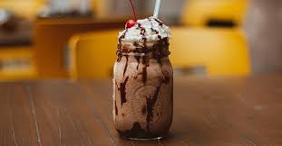
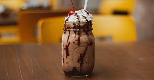

-
Milkshakes

17 sabores
-
Doces

20 doces diferentes
Localização da SHAKE & HISTORYS
✿ Umas das nossas receitas de Milk Shake ✿
Localizada no centro de Curitiba, próxima a UFPR o café Shake & Historys é um lugar calmo para você ler, estudar e trabalha enquanto desfruta do nosso cardápio de doces, cafés e milkshakes personalizados e inspirados em livros.
Onde você pode desfrutar da biblioteca que temos no andar de cima com os livros do momento para ler ali mesmo, comprar ou trocar.
Nossa missão é: "Te proporcionar o melhor lugar para passar uma manhã ou tarde calma, tranquila e aconchegante".
A Shake e Historys em poucos meses se tornou um ponto de encontro para leitores nos eventos literários que realizamos.
 


17 sabores
20 doces diferentes
Localização da SHAKE & HISTORYS
✿ Umas das nossas receitas de Milk Shake ✿
© Copyright SHAKE & HISTORYS- 2020